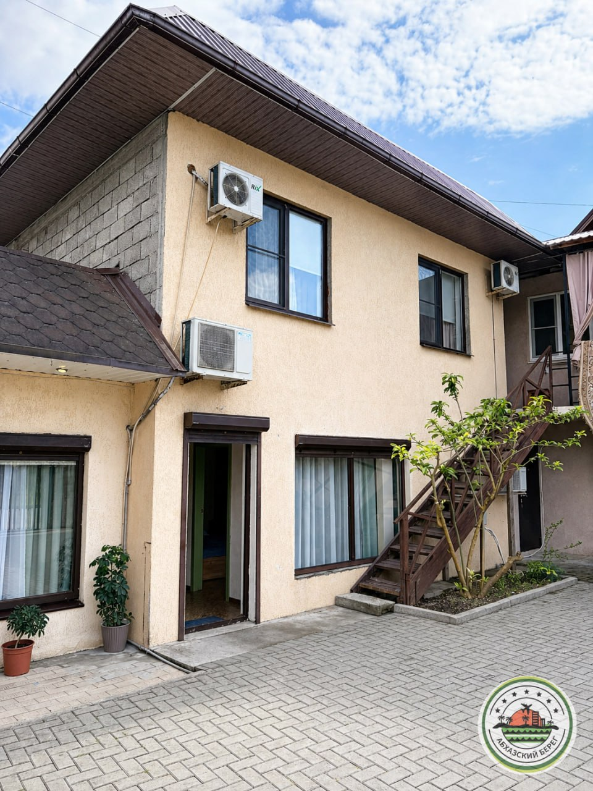

Варианты размещения до 5 тыс.руб в сезон
ЛДЗАА
1
«СИЗОН» гостевой дом
🏖️ 2 мин до пляжа (песок/мелкая галька)
2
«СТАРЫЙ ПРИЧАЛ» гостевой дом у моря
🏖️ 0 мин до пляжа (песок/мелкая галька)
3
«АНИСА» квартира 1-к
🏖️ 2 мин до пляжа (песок/мелкая галька)
ПИЦУНДА
4
«БОНЖУР» мини-отель
🏖️🌲 2 мин до пляжа (сосновый галечный)
5
«НОРА» гостевой дом эконом
🏖️ 🌲3 минуты до пляжа, галечный сосновый пляж
6
«САМШИТ» домики и номера у заповедника
🏖️🌲 2 мин до пляжа (сосновый галечный)
7

«СВЕТЛЫЙ ДВОРИК» гостевой дом эконом
🏖️🌲 3 мин до пляжа (сосновый галечный)
ГАГРА
8
«САНРАЙЗ» гостевой дом с завтраками
🏖️10 минут пешком до пляжа
9
«КИПАРИСОВАЯ» квартира 1-к
🏖️ 5 мин до пляжа (галечный)
АЛАХАДЗЫ
10
«ДИАР» домики с бассейном
🏖️ 8 мин до пляжа (галечный)
11
«РУСАНА» эко-домики
🏖️ 13 мин до пляжа (галечный)
12
«САБИНА» домики у моря
🏖️ 0 мин до пляжа (галечный)
ГУДАУТА
13
«БЕЛАЯ РЕЧКА» гостевой дом с кафе
🏖️ 10 мин до пляжа (галечный)
14
«ЭСМА» домики с бассейном в Гудауте
🏖️ 7 мин до пляжа (галечный)
НОВЫЙ АФОН
15
«ДЕЛЬФИН» домики
🏖️ 4 мин до пляжа (галечно-песчаный)
16
«МАНДАРИНОВЫЙ ДВОРИК» дом под ключ
🏖️пляж в 15 минутах пешком, галечный
17
«НИКОПСИЯ» домики
🏖️ 7 мин до пляжа (галечный)